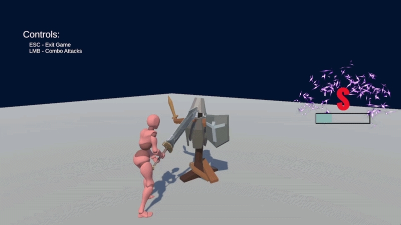
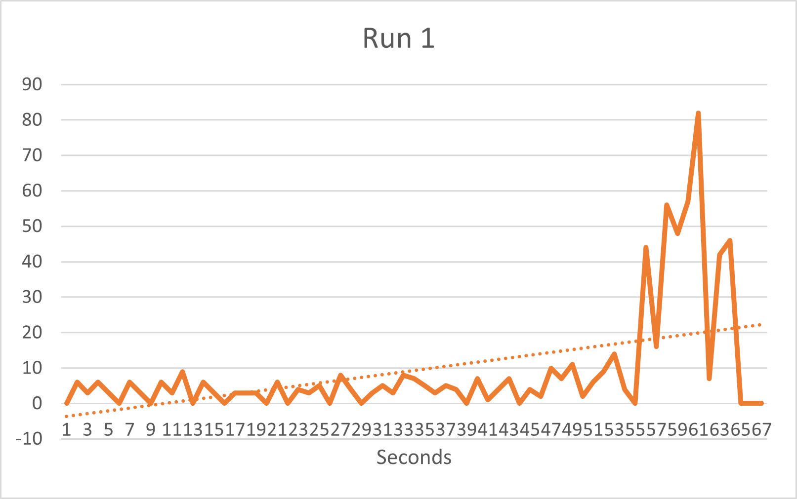

Fall 2025
Feedback Arc Prototype

The purpose of this project was to create a simple combat loop prototype intertwined with a fully designed feedback arc to create a visceral user experience for a player. Considering examples of feedback found in Devil May Cry, I focused on recreating combat UX and feedback that felt satisfying and engaging. The purpose is to ensure that everything that happens throughout the combat demo project is eased into and doesn't come off harshly to users. The focus of the feedback arc that I designed relies heavily on the stages of the style meter, which progresses the more active you are in combat. It largely includes hits generating points into the meter, and moments of inactivity begin to reduce those points. This has an intertwined correlation to the amount of feedback the player is actively experiencing.
Design of the Feedback Arc
Creating an introduction that brings the player into the arc smoothly. This involves text fading in for controls, and the practice dummy taunting to draw attention to get the player to initiate. As soon as action is taken on the dummy, several forms of feedback begin, including:
- Taunt changing to a hit reaction
- Style Meter introduction animation
- Basic Hit sparks and sound effects
- Slight Style Meter shake on hit
Development and Development Spikes
As more actions are taken, these elements of feedback escalate and become much more prominent, creating double hit effects to triple hit effects toward the end of the development at its peak. These hits act exactly like those of the initial contact but serve as extra damage and extra flare. An electric effect surrounding the meter grows as the score accumulates towards its maximum, shaking with each hit and growing with a slamming lerp effect for extra visual haptic feedback. The screen shakes for given attacks at further stages to make the hits feel stronger – giving the attacks weight.
- Style meter point generation
- Style meter shake (increasing velocity based on current stage)
- Changing VFX per stage based on the applied damage
- SFX and background audio get louder/heavier as the arc progresses.
- Camera shake and dynamic movement including zooming effects for charged attacks.
- Special animations before new spikes.
The resolution of feedback is simply the easing of all the feedback down and adding additional parts. This included fading out the defeated dummy and hiding the active style meter. Preventing the end of the fight from ending too suddenly and still allowing small bits of feedback to enter to ease the players back out of engagement.
Most feedback was implemented with an action list I created that allowed for individual and precise control of elements of UI and game objects. This includes shaking, moving, rotating, and fading, which I made to be applied to anything considered a unity game object. This allowed for clean control over actions happening at once and priority, as well as ensuring a strict order of operations.
Using Unity's Cinemachine package for the dynamic camera, I was able to apply focus to the player and create a unique action for it. Using Cinemachine functions, I made an action that was able to zoom in and out easily for attacks that had a build-up to full power.
Combo System/Attack Queuing
My design for combos was focused on delayed inputs as the main key to different variations of attacks. I used Unity's scriptable objects to contain each attack's input window, animation, and potential next attacks allowed almost in a linked fashion. I designed a queue that would not accept items that have already been put into the list, and it only allowed anything in the actions path. This uses an active attack in a loop and pops everything once the combo is complete; animation timings were vital in dynamically recognizing when combat actions would be complete.
Gathering telemetry data for an arc of visual feedback and engagement is done by reducing each element that the player sees into a number that accurately relates to how much is happening on screen. This can determine how overwhelming specific stages of the arc potentially are and whether or not there is a clear increase in the user's engagement through feedback. These telemetry identifiers became:
- Number of hits
- Current Style Meter Stage
- Amount of screen shake
- Amount of VFX on screen
- Audio volume
Through the analysis of multiple runs of telemetry data, I found that over time, engagement resets frequently to zero. I believed this could mean the lack of inclusion of the player's animation attack start, or the need for potential modification to the telemetry system. If I had engagement slowly die down, similar to the style meter, it could also be a good way to reflect the amount of feedback processed. Additionally, during the peak of the arc, so much is happening that the amount on screen is 10 times the amount of what happens during the rising development phase. This is mostly intentional to imagine an intense finale for the arc and shock the user with what can happen at its maximum potential. Shake is also the most prominent action taken throughout the project's runtime, which is due to the rumble of the style meter, most likely, and it's a subtle effect, so its points per trigger are much smaller than the others.
